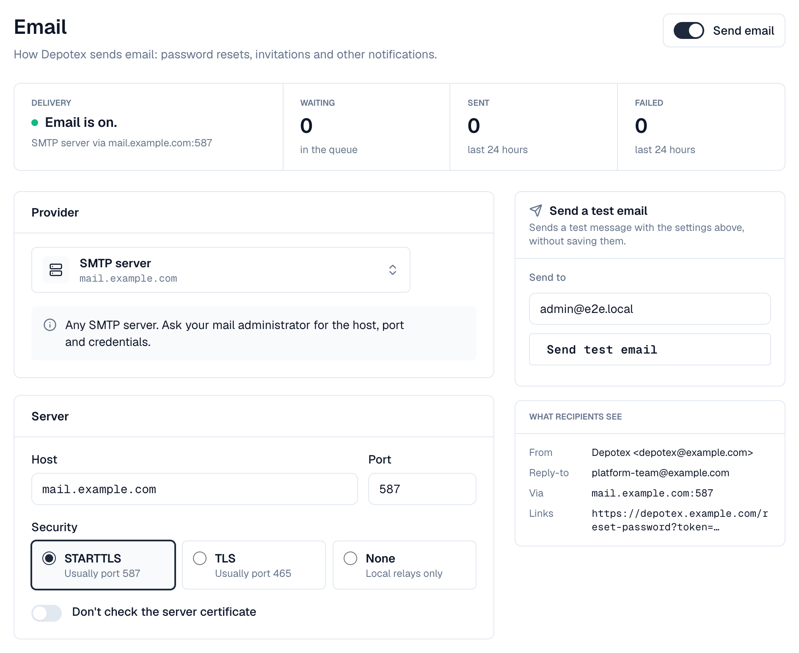
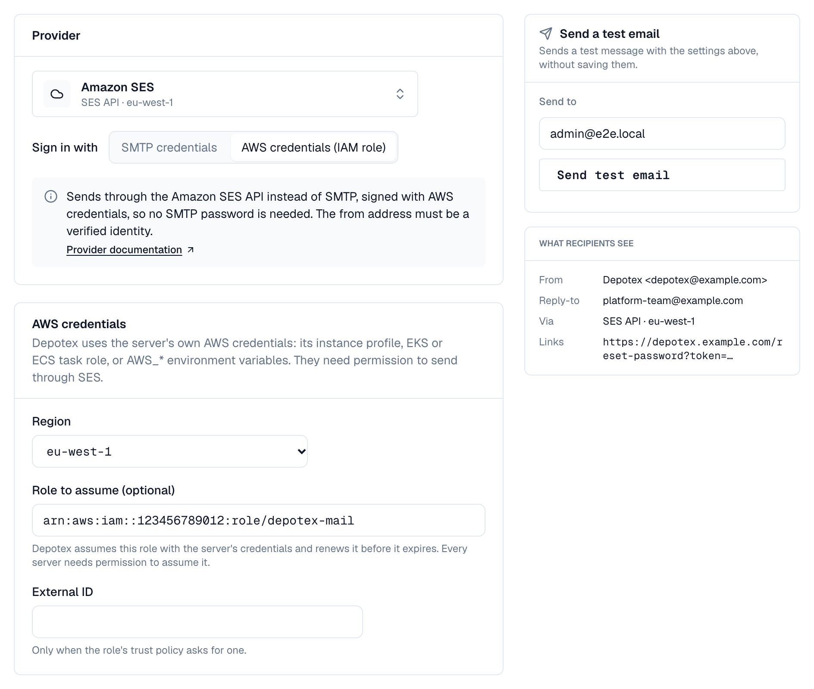

1. Overview
Depotex sends email for password resets, invitations to new users and test messages. Set it up under Settings → Application → Email (super admins: the email:manage permission). Until email is on, Forgot password? isn't shown on the sign-in page and new users can't be invited by email.
Every provider below is reached over SMTP, the standard mail protocol: choose a preset and Depotex fills in the server, port and security for you. Amazon SES can also be used through its API with an IAM role instead of SMTP credentials (see Amazon SES with an IAM role). Available on every license tier.
Messages are first stored in the database and then sent in the background (every 10 seconds, by the mail-dispatch scheduled job). If the mail server is down, Depotex retries after 1, 5 and 15 minutes, 1 hour and 3 hours, then gives up. Messages the server refuses for good (for example an unknown recipient) aren't retried. In a cluster, each message is sent by one server. Once a message is sent or given up on, its content is deleted (it may contain a one-time link); only the recipient, type and status are kept, for 30 days.
2. Before you start
- An account with your provider that may send from the address you want to use (the from address), usually after verifying the address or domain with the provider.
- SMTP credentials for that account (see your provider below).
- Outbound access from every Depotex server to the provider's SMTP port (587, or 465 for TLS, or 25 for a local relay). Amazon SES through its API uses HTTPS (port 443) instead.
- The address people open Depotex at, for example https://depotex.example.com. Links in emails start with it.
3. Setting up email
At the top of the page, Delivery shows whether email is on and how it goes out, how many messages are waiting, and how many were sent or failed in the last 24 hours, with the last problem when there was one. Beside the form, Send a test email tries the settings on the screen and What recipients see shows the sender, reply-to address, server and links a message will have.

- Open Settings → Application → Email —
- Choose a provider — Open the Provider list and pick your provider (your own SMTP server or relay, or an email service). Host, port and security are filled in; check them against your provider's instructions. Choosing a security option moves a standard port with it (587 for STARTTLS, 465 for TLS, 25 for None); a custom port stays.
- Enter the credentials — Username and password (or API key) from your provider; see the table below for what each provider expects. The password is stored encrypted and never shown again; leave it empty later to keep it.
- Enter the sender — From address (must be allowed to send at your provider), From name (shown as the sender, for example Depotex) and, optionally, a Reply-to address.
- Enter the Depotex address — The full address people use to open Depotex, for example https://depotex.example.com. Depotex never takes it from the incoming request, so a forged request can't put someone else's site into a reset link. It's the same setting as Settings → General → Depotex address, also used by single sign-on.
- Turn it on — Turn on Send email at the top of the page and select Save in the bar that appears at the bottom. If a field can't be saved, it is marked in red with the reason under it.
- Send a test email — Under Send a test email, enter an address (yours by default) and select Send test email. It's sent right away with the settings on the screen, even before you save them, and tells you exactly what failed if it doesn't work.
4. Providers
| Provider | Server and port | Username | Password | Notes |
|---|---|---|---|---|
| SMTP server | Your server, usually 587 with STARTTLS or 465 with TLS | Mailbox or account name | Its password | Any SMTP server, for example your company's mail server. |
| Local mail relay | localhost, port 25, no encryption | Usually empty | Usually empty | Postfix, Exim or sendmail on the Depotex server or a trusted network, which forwards mail onward. |
| Amazon SES | email-smtp.<region>.amazonaws.com, 587, STARTTLS (choose your region) | SES SMTP username | SES SMTP password | Create SMTP credentials in the Amazon SES console under SMTP settings → Create SMTP credentials; they are not your AWS access keys. The from address or its domain must be a verified identity, and new accounts start in the SES sandbox, where you can only send to verified addresses until you request production access. |
| Microsoft 365 | smtp.office365.com, 587, STARTTLS | The mailbox address | The mailbox password (or app password) | The mailbox needs a license and Authenticated SMTP turned on (Microsoft 365 admin center → user → Mail → Manage email apps). Security defaults or Conditional Access may block it. |
| Google Workspace / Gmail | smtp.gmail.com, 587, STARTTLS | The account address | An app password | Turn on 2-step verification for the account, then create an app password in the Google account's security settings. Google limits daily sending. |
| SendGrid | smtp.sendgrid.net, 587, STARTTLS | apikey (filled in) | A SendGrid API key | Create an API key with Mail Send permission. Verify the sender address or authenticate the domain first. |
| Mailgun | smtp.mailgun.org (US) or smtp.eu.mailgun.org (EU), 587, STARTTLS | The domain's SMTP login | Its SMTP password | Find them under Sending → Domain settings → SMTP credentials. Pick the region your Mailgun domain is in. |
| Postmark | smtp.postmarkapp.com, 587, STARTTLS | Your server API token | The same server API token | The from address must be a confirmed sender signature or domain. |
5. Amazon SES with an IAM role
SES's SMTP interface only accepts SMTP credentials, which belong to an IAM user. To use an IAM role instead (an EC2 instance profile, an EKS or ECS task role, or a role in another account), choose Amazon SES and, under Sign in with, AWS credentials (IAM role). Depotex then sends through the SES API over HTTPS, and no SMTP password is stored.

- Give the servers AWS credentials — Each Depotex server needs its own AWS credentials: an instance profile, an EKS or ECS task role, or the AWS_ACCESS_KEY_ID / AWS_SECRET_ACCESS_KEY environment variables.
- Allow them to send — Attach a policy like the one below to those credentials, or to the role Depotex assumes.
- Choose AWS credentials (IAM role) — Under Provider, choose Amazon SES, then AWS credentials (IAM role). The server and credentials fields are replaced by AWS credentials.
- Pick the region — The SES region your verified identity is in.
- Optionally, a role to assume — Enter a Role to assume (for example arn:aws:iam::123456789012:role/depotex-mail) when sending happens in another account or with a narrower role. Depotex assumes it with the server's own credentials and renews it before it expires. Enter the External ID only when the role's trust policy asks for one.
- Send a test email — As for any provider. The Delivery check in the system check also confirms the credentials work and the SES account may send.
{
"Version": "2012-10-17",
"Statement": [
{
"Effect": "Allow",
"Action": ["ses:SendEmail", "ses:SendRawEmail"],
"Resource": "arn:aws:ses:eu-west-1:123456789012:identity/example.com"
},
{
"Effect": "Allow",
"Action": "ses:GetAccount",
"Resource": "*"
}
]
}ses:GetAccount is optional: the system check uses it to see whether the account is allowed to send. Without it, the check only confirms the credentials work. With a role to assume, the servers' own credentials also need sts:AssumeRole on that role, and the role's trust policy must allow them.
The from address or its domain must still be a verified identity in that region, and the SES sandbox rules apply as with SMTP.
Security: use STARTTLS (port 587) or TLS (port 465). None sends passwords and messages unencrypted and is meant only for a relay on the same machine or a trusted network. Don't check the server certificate is for test labs only.
For good deliverability, set up SPF, DKIM and DMARC for your sending domain at your provider; otherwise resets and invitations may land in spam.
6. Fields
| Field | What to enter |
|---|---|
| Send email | On to send; off pauses everything (queued messages wait) |
| Provider | Preset that fills in server, port and security |
| Sign in with | Amazon SES only: SMTP credentials, or AWS credentials (IAM role) to send through the SES API |
| Region / Role to assume / External ID | SES API only: the SES region, an optional IAM role ARN to assume, and the external ID its trust policy asks for |
| Host / Region | SMTP server name, without smtp:// or a port |
| Port | 587 (STARTTLS), 465 (TLS) or 25 (local relay) |
| Security | STARTTLS, TLS or None |
| Username / Password | SMTP credentials; the password is write-only |
| From address / name | Sender of every email |
| Reply-to address | Optional: where replies go |
| Depotex address | Full https:// address people use to open Depotex; required to turn email on |
7. Troubleshooting
| Message | Cause and fix |
|---|---|
| Couldn't reach the mail server | Wrong host or port, or a firewall blocks outbound SMTP (many clouds block port 25). Try 587. |
| The secure connection failed | Wrong security for the port (465 needs TLS, 587 STARTTLS), or an untrusted certificate. |
| The server doesn't support STARTTLS | The port expects TLS or no encryption. Use 465 with TLS. |
| The server refused the username or password | Wrong credentials. For SES use SMTP credentials, for Google an app password, for SendGrid the username apikey. |
| The server refused the message | The from address isn't verified or allowed, or (SES sandbox) the recipient isn't verified. |
| AWS refused the credentials, or the server has none | SES API: the server has no instance profile or task role, the role to assume can't be assumed (check its trust policy and the external ID), or the policy doesn't allow ses:SendEmail and ses:SendRawEmail in that region. |
| Amazon SES has paused sending for this account | SES paused or suspended sending (often for bounces or complaints). Check the account in the SES console; queued messages wait and are retried. |
| The account's sending rate was exceeded | More messages than the SES account allows per second. Queued messages are sent again later; ask AWS for a higher sending quota if it keeps happening. |
| Test works but resets don't arrive | Check spam folders and the provider's activity log; Delivery on the Email page shows messages waiting or failed in the last 24 hours. |
8. Configuration
| Variable | Default | What it does |
|---|---|---|
| MAIL_DISPATCH_INTERVAL | 10s | How often queued email is sent |
| MAIL_CLEANUP_SCHEDULE | 30 4 * * * | When records of sent and failed email older than 30 days are removed |
| AUTH_PASSWORD_RESET_TTL | 30m | How long a password reset link works (5m to 24h) |
| AUTH_INVITATION_TTL | 168h | How long an invitation link works (1h to 30 days) |
9. Events
mail.settings.update is raised before and after the settings change, with whether it sends over SMTP or the Amazon SES API (never with the password). Password resets and invitations raise user.password.recover and user.invitation.accept. See Events.